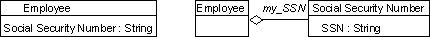
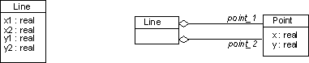

| Рекомендация: Реализация классов |
 |
|
| Связанные элементы |
|---|
Реализация операцийДля реализации операций выполните следующие действия:
Выбор алгоритмаМногие операции достаточно просты, поэтому их можно реализовать на основе операции и ее спецификации. Сложные алгоритмы в первую очередь необходимы по следующим причинам: для реализации сложных операций с заданной спецификацией, а также для оптимизации операций, определением которых служит простой, но неэффективный алгоритм. Выбор структур данных, соответствующих алгоритмамВыбор алгоритмов включает в себя выбор структуры данных, с которой работают эти алгоритмы. К структурам данных относятся классы контейнеров, например, массивы, списки, очереди, стеки, наборы, мультинаборы, а также разновидности этих элементов. Большинство языков и сред программирования, основанных на объектах, предусматривают библиотеки классов, где содержатся эти многоразовые компоненты. Определение необходимых новых классов и операцийНовые классы могут содержать промежуточные результаты. Для разложения сложной операции к классу можно добавлять новые низкоуровневые операции. Эти операции часто являются частными для класса, то есть они не видны за пределами класса. Кодирование операцииСоздайте код операции, начинающийся с оператора интерфейса. Следуйте рекомендациям по программированию. Реализация состоянийСостояние объекта можно реализовать, создав ссылку на значения его атрибутов, без специального представления. У таких объектов нет явно выраженного понятия состояния, и их состояние зависит от совокупности значений атрибутов. Ввиду отсутствия формальных состояний, управление этими объектами осуществляется с помощью условных операторов. Этот метод не подходит для вариантов поведения, потому что он требует создания сложных структур, которые трудно изменять при добавлении или редактировании состояний. Если поведение элемента проектирования (или его составляющих) зависит от состояния, создается одна или несколько диаграмм состояний, в которых описано поведение элементов модели в элементе проектирования. Эти диаграммы служат важным источником входных данных в процессе реализации. В диаграммах состояний конечные автоматы отражают состояние объекта, переходы между состояниями и необходимое поведение. Конечные автоматы можно реализовать следующими способами:
Конченые автоматы и сопутствующие дочерние состояния можно реализовать путем передачи контроля за состояниями активным объектам. При этом каждому объекту передается управление одним дочерним состоянием, потому что дочерние состояния требуют независимых вычислений (которые, тем не менее, могут пересекаться). Каждым дочерним состоянием можно управлять с помощью описанных выше методов. Делегирование для повторного использования реализацииЕсли класс или его части можно реализовать путем повторного использования существующего класса, вместо наследования используйте делегирование. При делегировании класс реализуется с помощью других классов. Класс ссылается на объект другого класса с помощью переменной. За вызовом операции следует вызов операции в объекте повторно использованного класса, где происходит фактическое выполнение. Таким образом, выполнение делегируется и переносится из одного класса в другой. Реализация связейОдносторонняя связь реализуется как указатель, то есть как атрибут, который содержит ссылку на объект. Если для опции множественности задано значение one, то односторонняя связь реализуется как простой указатель. Если для этой опции задано значение many, то она реализуется как набор указателей. Если задано значение many, то вместо набора можно использовать список. Двусторонняя связь реализуется в виде атрибутов для обоих направлений. При этом используются методы создания односторонней связи. Полная связь реализуется в виде таблицы поиска (например, класс словаря Smalltalk) в дополняющем объекте. В таблице поиска значения селектора задаются спецификаторами, а целевые значения - объектами другого класса. Если доступ к значениям спецификаторов осуществляется в определенной последовательности, то спецификаторы можно сгруппировать в отсортированный массив или в древовидную структуру. В этом случае время доступа будет пропорционально протоколу N, где N - это количество значений спецификатора. Если спецификаторы заданы на основе компактного конечного множества, то их значения можно связать с областью целочисленных значений, и связь можно реализовать как массив. Этот подход удобно использовать, если связь заполнена почти полностью, а не частично, и он идеально подходит для полностью заполненных конечных множеств. Большинство языков и сред программирования, основанных на объектах, предусматривают библиотеки классов, где содержатся многоразовые компоненты, которые можно использовать для реализации связей разных видов. Реализация атрибутовАтрибуты можно реализовать одним из трех способов: с помощью простых встроенных типов, существующего класса или нового класса. Обычно удобнее всего создание нового класса, но этот метод требует осуществления косвенного вызова. Например, номер пенсионного страхования сотрудника можно реализовать как атрибут класса String или как новый класс.  Альтернативные реализации атрибута. Иногда новые классы создаются на основе групп атрибутов, как показано в следующем примере. Обе реализации верны. 
Атрибуты элемента Line реализованы в соответствии с классом Point. |
© Copyright IBM Corp. 1987, 2006. Все права защищены.. |